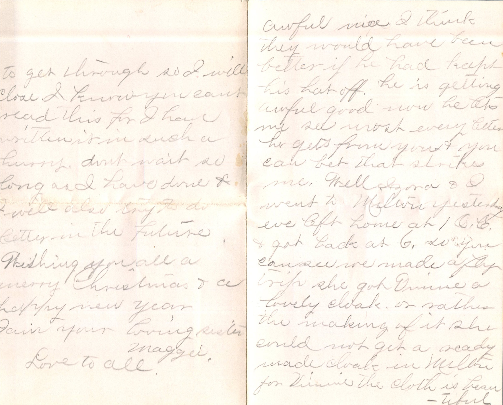
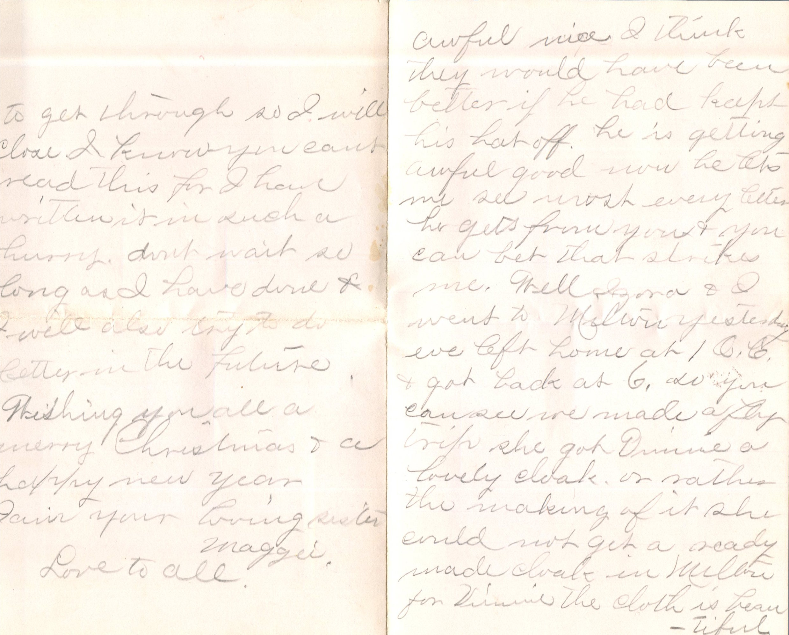

From: Maggie Knox, To: Jeanette Knox Chandler


 4
4From: Maggie Knox, To: Jeanette Knox Chandler Mailed From: Pearl, Illinois on December 24th, 1885
Miss Nettie Knox Sidney, Iowa Fremont Co
A Merry Christmas to all, Pearl, Ills Dec 24th, '85 Miss Nettie Knox, Dear Sister, I will now try and answer your kind letter which I received 22nd and was glad to hear of you all being well as is expected of us at present. Well Nett we are looking for Izora's folks down today to spend Christmas and O how we wish you and Anna was here too. We have just killed two big turkeys. We have no help yet. Lizzie went home last Monday still grunting, and Ma and I have all this work. We thought that was another new dress you had got, we thought you was going to put on a happy dog. Have you got your black dress and that beautiful red made in Bella. Betts is not coming down till spring and I guess she will have company with her when she comes. O yes about Mob Rose and Lansdon. Sadie Lewton found a letter that Mob had written to him but she wont tell what is in it. She has the letter - saving it so if any thing comes out she will have it to show. Lizzie J says for you to write to her. Lizzie J made my dress. It is awful nice she just got it finished it is trimmed in velvet. Mrs. Mearre is down sick with the lung fever. I guess Billie Shay is waiting on her. O I am just crazy for you to come home. I want to see them sweet children so bad. Nett there is going to be a ball here tomorrow night in the Ha.. Both operations are boarding hereon. The night operation left Stathernsr and came here. He is awful cute. He isn't near as large as Sabrine. Lee says he is going to try to dance his first set tomorrow night. Nett, Lon Woods gets married tonight to Belle Garrison and Mort Edwards was married Milton to a cousin of Lidia Kisey's. O yes tell Will that Mort Edwards was down yesterday and said he got a letter from Sabina the day before and she sent her regards to all the folks especially Willie. She is in Ohio. Belle Berry is coming back the first of next month. Well I wish I had some of those pretty toys out there because I don't expect any here. O it is the driest Christmas I ever say except the Saloons. Tell the children I am as ugly as a muck fence. Well Nett, Ma will send you $5.00 for yourself and $5.00 for the children to get them some presents. I guess that is all she can send this Christmas. Well I haven't time to write any more. We are so busy now. With love to all and a portion for myself. I remain your loving sister, Maggie Knox Christmas gift to all. Nett, Ligo is sick for two days but I guess it is grieving over you. M.K.

 



 From: Izora H., To: Jeanette Knox Chandler
From: Izora H., To: Jeanette Knox Chandler


 From: Linnie Samuels, To: Jeanette Knox Chandler
Mailed From: Riverton, Iowa on August 31, 1885
From: Linnie Samuels, To: Jeanette Knox Chandler
Mailed From: Riverton, Iowa on August 31, 1885